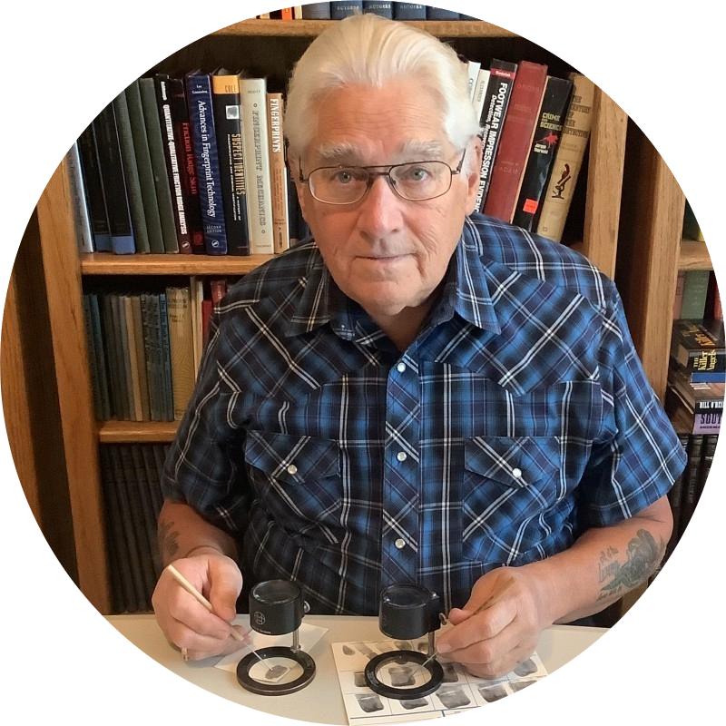

Edited by Eve Porinchak
Introduction by Pat Wertheim
Release Date: October 1, 2024
-
ABOUT THE BOOK
Stephen Lu knew what it was like to fight for his life—literally. During the worst months of a mysterious illness, his body and mind were under siege, bringing him to the point of almost giving up. He eventually clawed his way back to health with the help of doctors, coaches, friends, and their life-saving practices.
But this wasn’t the first or last battle Stephen would fight. Throughout the development of his career as a Crime Scene Investigator, he experienced several defining moments under brutal and demeaning leadership. Stephen fought to overcome the barriers that people threw at him for standing up for science and curiosity: worker abuse, harassment, retaliation, and discrimination.
Armed with a wealth of experience to draw from and his insatiable hunger for personal growth, Stephen’s relentless fight to stay curious led him to a role he never expected–the CEO of his own forensic leadership development company.
With a meticulously crafted narrative, Stephen’s dark humor and straightforward, no-BS attitude display themselves in one inspiring memoir that combines true crime, forensic how-to, and leadership lessons. His unique journey from the world of forensic investigation to the realm of leadership bestowed upon him a fresh perspective, enabling him to empower individuals and organizations to unlock their true potential for the public good.
-
STEPHEN J. LU
Throughout his varied careers, Stephen has studied everything from mosquitoes and disease biology to bloodstain patterns, bullet trajectories, and digging up clandestine graves.
Today—through innovative, collaborative communication and technology solutions—he works to foster better leadership in the forensics industry and to support and improve the lives of people diagnosed with Amyotrophic Lateral Sclerosis (ALS).
With six years as a published research scientist and seventeen years working in forensics, Stephen has experienced and observed a wide variety of leadership styles—coercive to collaborative—noting their effects on himself, his colleagues, and organizational integrity. After retiring from forensics, Stephen went on to earn his Executive MBA with the express goal of helping his clients develop effective leadership skills and strategies.
Stephen has seventeen years of forensic experience, including Forensic Biology, Crime Scene Investigation and Reconstruction, and Firearms Analysis. He has testified as a qualified expert witness in courts in Arizona and California and in front of the U.S. District Court for the Central District of California. As an active member since 2007, he has served as the Regional Director South and Lead Webmaster for the California Association of Criminalists. In these roles, he increased public visibility by transforming the website and guiding the leadership through the transition to online training during the COVID-19 pandemic.
Before his career in forensics, Stephen worked for six years as a published research scientist. Under Dr. Michael Wells at the University of Arizona, he studied protease regulation in the Yellow Fever mosquito, Aedes aegypti. He also completed an internship at the National Institutes of Health/NIDDK, studying neutral lipid trafficking in Niemann-Pick Type C disease under Dr. E. Joan Blanchette-Mackie.
Stephen holds an Executive MBA with Honors from Quantic School of Business and Technology and a Bachelor of Science with Honors, magna cum laude, in Biochemistry and Molecular Biophysics and Molecular and Cellular Biology from the University of Arizona. Stephen is Phi Beta Kappa and a Society for Human Resource Management Certified Professional (SHRM-CP).
Stephen has intermediate fluency in French, Mandarin Chinese, and American Sign Language (ASL).
In his free time, Stephen enjoys reading and writing, web development, electronic music composition and production, and playing with Aries, a stubborn Siberian Husky.
Author's Website
-
EVE PORINCHAK
Since earning a degree in psychology and biology from UCLA, Eve has spent much of her time in and out of jail—teaching creative writing to incarcerated teens. A former agent with Jill Corcoran Literary, Eve also attended medical school, served as a child welfare case worker, and has taught everything from Kindergarten to college courses. She speaks at conferences all over the country and teaches courses at UCLA on all things publishing. A highly collaborative developmental editor, Eve prides herself on whipping manuscripts into submission-ready shape, and has guided countless aspiring authors on their paths to publication.
Eve writes stories featuring youth she feels have been underrepresented in children’s literature, such as those born into gang life, the abandoned, and the incarcerated who—ironically—have the most fascinating tales to tell. Her critically acclaimed book, One Cut—a haunting nonfiction story with a juvenile justice bent—launched Simon & Schuster’s young adult true crime line SIMON TRUE in 2017.
Stephen's Review of One Cut
One Cut is a book written by Eve Porinchak about the Agoura Four.
This book was riveting and quite informative. Eve truthfully portrays a few significant faults within our criminal justice system, where the lives of people—especially young people—can be inexorably altered by the current political climate, the whims of judges, and fallacious arguments.
The deaths of people at the hands of others are especially tragic, where neither the defense nor prosecution truly "wins." While justice must be served, one has to ensure that the justice system is not used as a means to exact personal vengeance and vendetta or impose undue punishment.
Although a majority of cases are adjudicated fairly and with proper justice, it's the cases like the one Eve wrote about that bring light to these flaws—something that must be continually worked on. Nothing is perfect, and our criminal justice system certainly isn't. With work, however, we can always strive to improve it.
-
PAT WERTHEIM

Pat Wertheim has been impacting forensic science and the use of fingerprints in law enforcement for five decades. He has trained thousands of latent print examiners for hundreds of criminal justice agencies around the world on best practices in latent print comparison and ethical use of evidence.
Pat has worked on numerous high-profile cases involving erroneous identifications, latent print fabrication and fingerprint forgery. He has authored ground-breaking articles on detection of forged and fabricated latent print evidence, revealing the extent that corrupt law enforcement personnel have gone to fabricate evidence. Pat is fortunate to have investigated high profile cases such as the Harry Oakes murder in the Bahamas, the Shirley McKie erroneous identification in Scotland, the fabrication of evidence against Fred Van Der Vyver in South Africa, and forged fingerprints on an alleged Jackson Pollock canvas.
Pat enjoys being involved with the science of fingerprints at a fundamental level and has served on many boards through the decades. He is a Distinguished life-sustaining member of the International Association for Identification and the Southwestern Association of Forensic Scientists. He currently sits on the editorial board for the Journal of Forensic Identification.
He has served two decades on the global Scientific Working Group on Friction Ridge Analysis, Study and Technology (SWGFST), helping to establish guidelines for the correct practices in fingerprint use. He’s testified in numerous Daubert hearings, and holds certifications as a senior crime scene analyst, certified ten print examiner, and certified latent print examiner.
He is passionate about helping make society a safer better place by correct interpretation of fingerprint evidence, and helps keep innocent people from being convicted. He has helped exonerate falsely accused people by using fingerprint evidence to remove suspicion from innocent people. His greatest satisfaction comes from mentoring aspiring examiners and young professionals to advance their careers and further the work he has given the global fingerprint community in ethical use of latent prints.
Pat's Website
© 2023-2024 CSI to CEO. All Rights Reserved.
*Stephen J. Lu is an Amazon Associate and earns commission from affiliate links to Amazon.com posted on this website.
Amazon and the Amazon logo are trademarks of Amazon.com, Inc. or its affiliates.
Goodreads and the Goodreads logo are trademarks of Goodreads, a subsidiary of Amazon.com.